Kumquat v2 — le parcours tel qu'il est
Toutes les pages au téléphone (390 px) et leurs liens, relevés dans le code et dans l'app le 17/11/2026 (main = 910cfa5, rejeu des parties de Piemme78). C'est un état des lieux, pas une proposition.
Vue d'ensemble
Une case = un écran. Les flèches portent le libellé du bouton qui y mène. Les cases vertes sont les deux entrées du menu.
Faire défiler la carte et les captures vers la droite →
A · Premier jour : voir où je perds des points
L'import mène à Today ; chaque priorité ouvre l'arbre sur sa ligne.
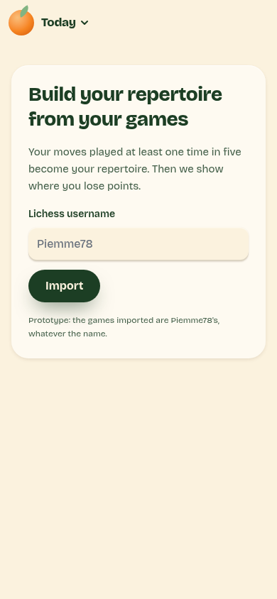
1Importpseudo Lichess, un bouton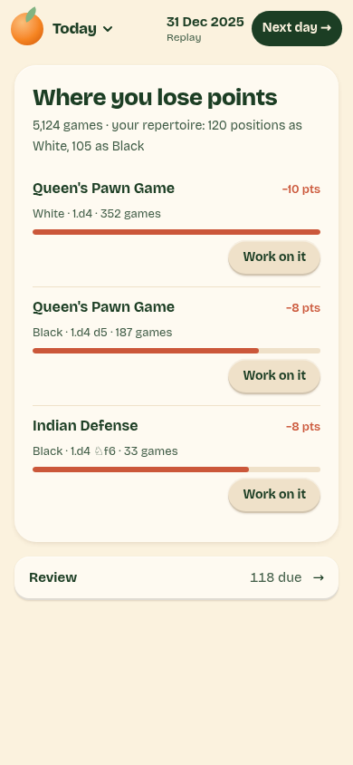
2Today, 1er jour« Where you lose points », 3 priorités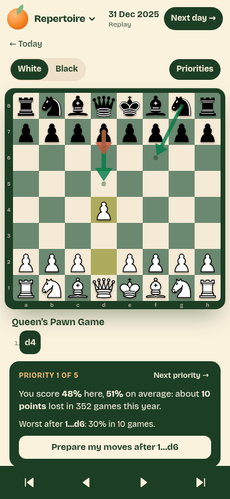
3Repertoire sur la prioritécarte « Priority 1 of 5 », « ← Today » en haut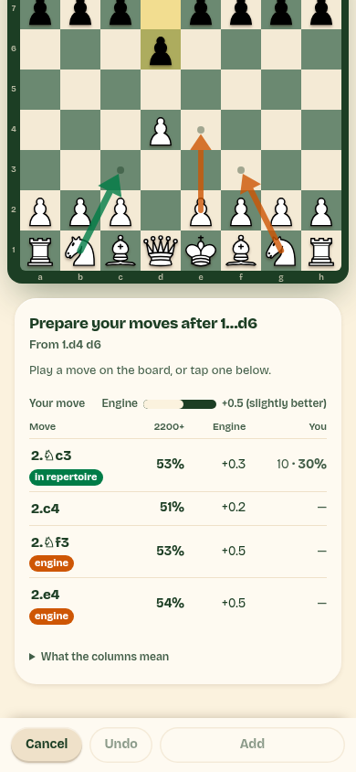
4Constructioncoups des 2200+, moteur, les miens ; Add ou Cancel ramène à (3)B · Après des parties : vérifier et trancher
« Next day » simule une journée de parties. Today les liste ; « Check them » lance la séance dans l'arbre.
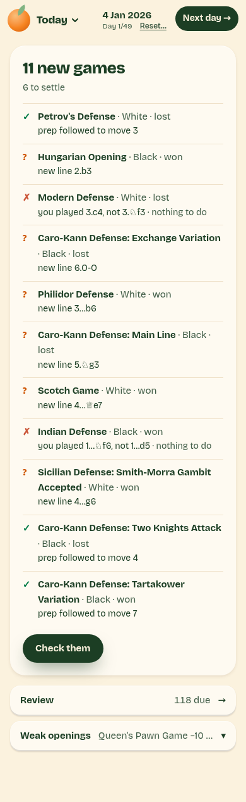
6Today, nouvelles parties11 lignes ✓ ? ✗, puis « Check them » (sous la ligne de flottaison)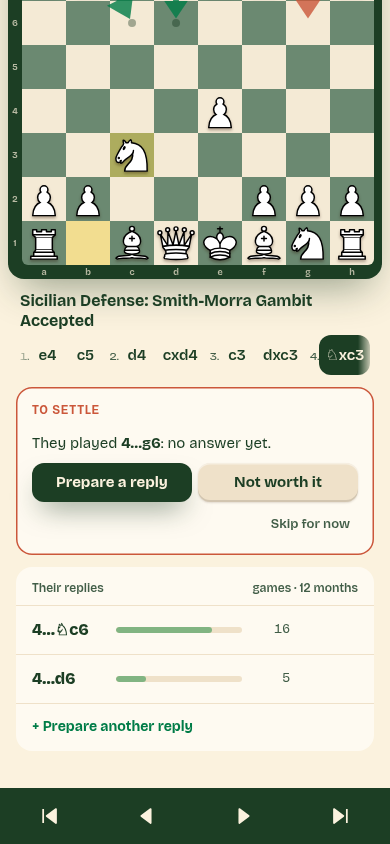
7Séance dans l'arbre« They played 4…g6: no answer yet. » · Prepare a reply · Not worth it · SkipC · Réviser
Depuis la ligne « Review » de Today : 5 lignes jouées depuis le répertoire, l'app joue l'adversaire.
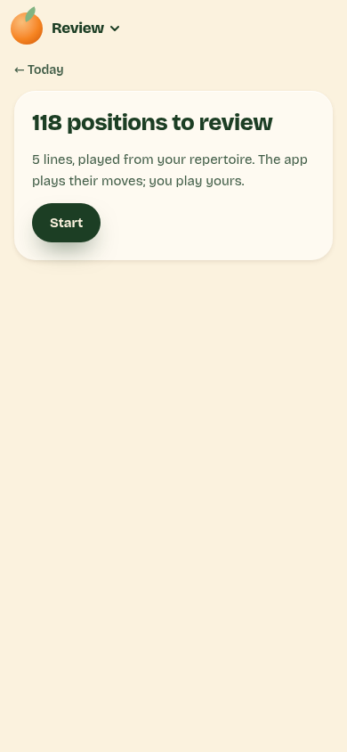
9Review« 118 positions to review » · Start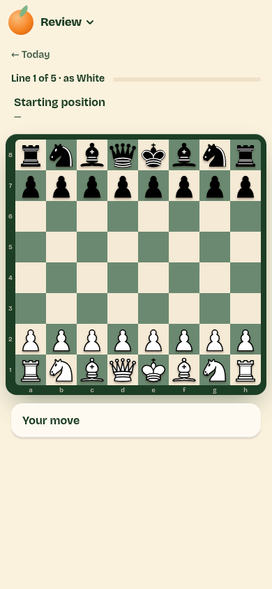
10Ligne 1 sur 5« Your move »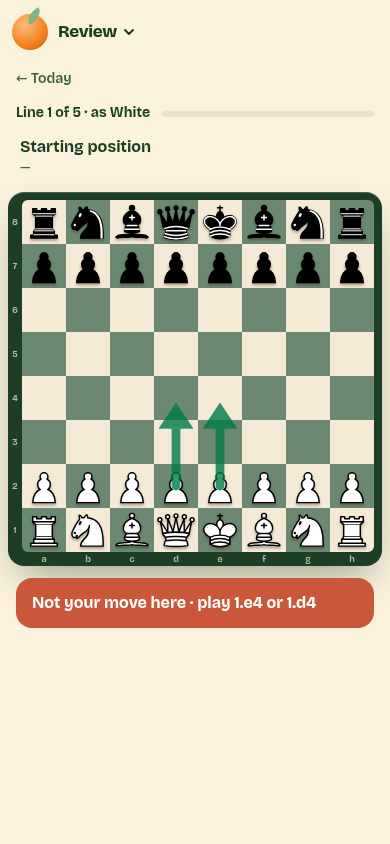
11Correction« Not your move here · play 1.e4 or 1.d4 » ; après 5 lignes, résumé → TodayD · Naviguer librement
Le menu du téléphone n'a que deux pages. Repertoire ouvert par le menu porte aussi la séance et les priorités.
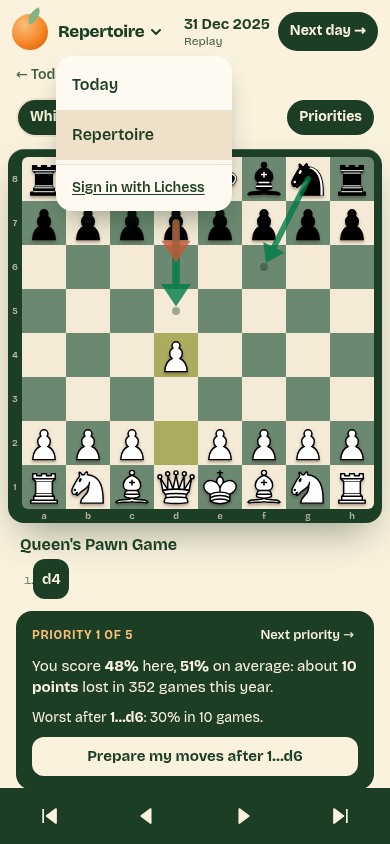
5MenuToday · Repertoire · Sign in with Lichess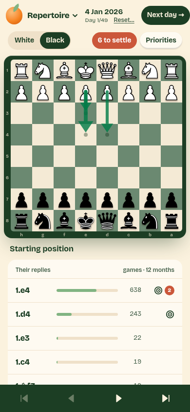
12RepertoireWhite/Black · « 6 to settle » · « Priorities » · table des coups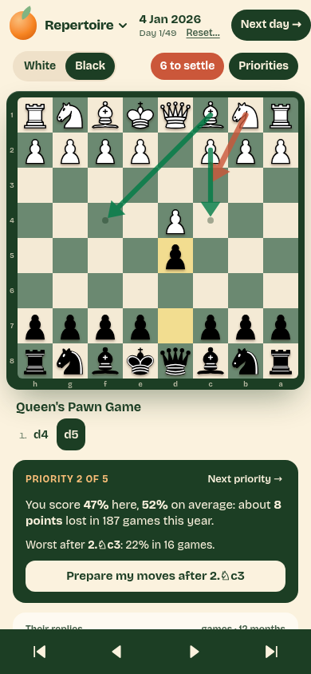
13Une prioritémême carte qu'en (3), sans « ← Today »E · Hors menu, encore en ligne
Joignables par l'adresse (/v2/games, /v2/openings) ; Openings par un lien de Today à l'ordinateur seulement.
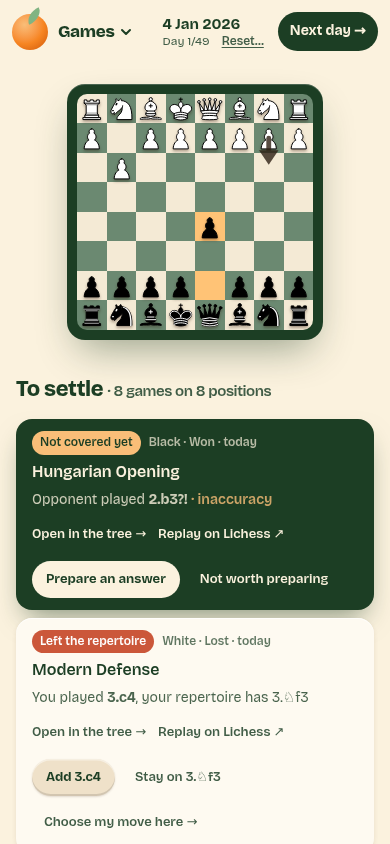
14Games« 8 games on 8 positions » · Not covered yet · Left the repertoire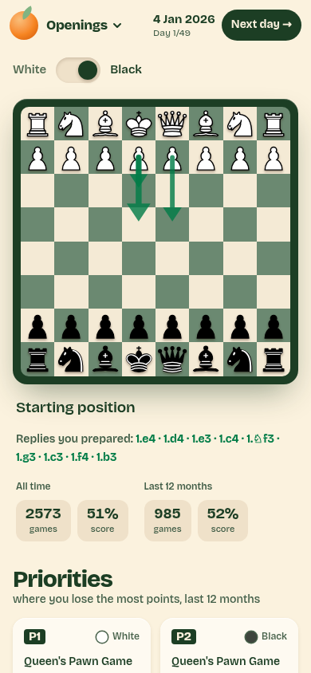
15Openingsstatistiques, « Priorities » P1 P2…Ce qui rend le parcours fouillis
Constats relevés en parcourant les captures, du plus structurant au plus local.
- Repertoire fait cinq métiers sur un écran. Parcourir, trancher (porte « 6 to settle »), travailler une priorité (bouton « Priorities » et sa carte), construire (en place), rejouer (« Next day »). La même page montre une carte différente selon la porte d'entrée, et rien ne dit dans quel mode on est. (3) (7) (12) (13)
- Le même travail a trois compteurs et quatre vocabulaires. Today dit « 6 to settle » avec ✓ ? ✗, Repertoire « 6 to settle », Games « 8 games on 8 positions » avec « Not covered yet » / « Left the repertoire ». Games n'applique pas le tri du moteur, d'où 8 contre 6. (6) (12) (14)
- Today marque ✗ un coup que le moteur ne reproche pas. « ✗ you played 1…♘f6, not 1…d5 · nothing to do » : une croix pour « rien à faire ». (6)
- La faiblesse change de nom à chaque écran. « Where you lose points », « Weak openings », « Priorities », « Priority 1 of 5 », « −10 pts ». (2) (3) (6) (12) (15)
- Le bouton d'action de Today passe sous l'écran. Avec 11 parties, « Check them » arrive après 11 lignes, hors de l'écran du téléphone. (6)
- Les retours ne sont pas les mêmes partout. « ← Today » n'existe que si l'on vient de Today ; la séance renvoie seule à Today à la dernière carte ; après « Add » dans la construction, on reste dans l'arbre sans signal de fin. (3) (7) (13) (4)
- Le rejeu occupe l'en-tête de chaque page. Date, « Day 1/49 », « Reset… », « Next day » : un outil de démonstration à la place du titre, au téléphone. toutes
- La révision annonce un chiffre sans rapport avec la séance. « 118 positions to review » dès le premier jour, pour une séance de 5 lignes. (9)
- Deux pages encore en ligne ne sont plus atteignables au téléphone. Games et Openings, sorties du menu, restent sur /v2. (14) (15)
Captures faites dans Chromium à 390 × 844, sur le serveur de développement. Les parties sont celles du rejeu (Piemme78), à partir d'un stockage vide.